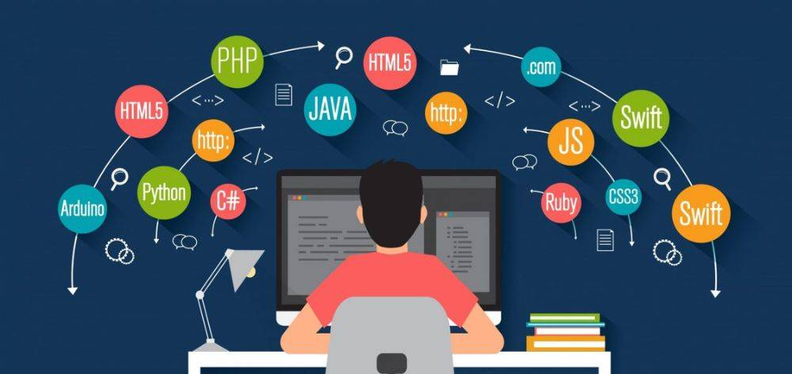

Hola este es mi Portafolio
parrafo1
parrafo2
principal
haz click aqui para mas info
Soy estudiante técnico de Computación e Informática en el tercer ciclo, con formación en programación orientada a objetos, desarrollo web y bases de datos.
Me encuentro fortaleciendo mis conocimientos en Java, C#, HTML, CSS y SQL, con el objetivo de convertirme en un desarrollador full stack capaz de crear soluciones empresariales completas.
Tengo habilidades en el análisis, diseño y modelado de sistemas, y estoy comprometido con seguir aprendiendo nuevas tecnologías para aportar en proyectos reales.


parrafo1
Soy Gustavo, un estudiante apasionado por el Desarrollo de Software que busca crecer cada día en el mundo de la programación. Desde que comencé a estudiar, descubrí que me encanta crear cosas nuevas, entender cómo funcionan las tecnologías y transformarlas en soluciones útiles para las personas. Me considero una persona dedicada, curiosa y constante, que no se rinde fácilmente ante los desafíos y que siempre busca aprender algo nuevo.
parrafo2
Actualmente me encuentro cursando el tercer ciclo de mi carrera y sigo perfeccionando mis conocimientos en Java, C#, HTML, CSS y JavaScript. Me gusta aprender de mis errores, mejorar mi lógica y aplicar buenas prácticas en cada proyecto que realizo. Mi meta es desarrollarme como programador backend, crear aplicaciones funcionales y eficientes, y seguir avanzando hasta convertirme en un profesional completo en el área del software.